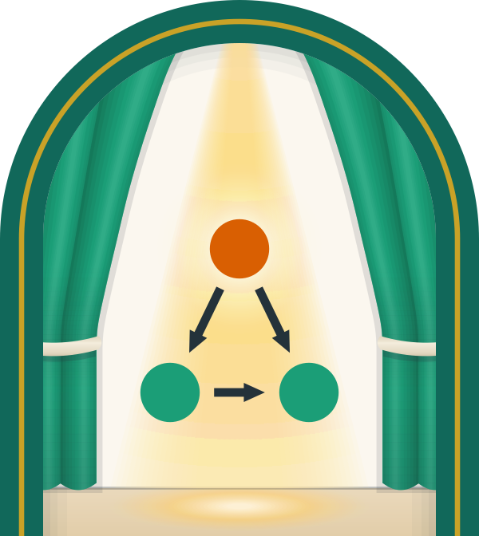

TL;DR. A Causal Diorama decomposes a video into a concept graph of variables that can be intervened on individually, so that one framework generates finely controllable videos from text, and revises generated videos and edits real videos by intervention, faithful to the instruction while preserving the unaffected content.
Two centuries ago, an early cinema-like theater called the Diorama could already control its scenes at will. Today's video generation models produce videos of near-cinematic quality, yet they still lack this controllability. This limitation stems from the inherent semantic gap between text and pixels, since a prompt can describe a video only coarsely and leaves its details and relations beyond control. We bring this ability to video generation with Causal Dioramas, modules that decompose a video into a concept graph of variables that can be intervened on individually. Each instruction is translated into an intervention on the concept graph, modifying the specified concepts and their dependents. A connector then conveys this intervention to the video generator, which reuses the original noise to produce a counterfactual video while preserving all other content. Building on Causal Dioramas, we develop a unified framework for controllable generation, counterfactual revision of generated videos and editing of real videos. We outperform both open-source and commercial models in controllability on T2V-CompBench, CoVEBench and OpenVE-Bench.
An illustration of how an intervention takes place. Source shows a Causal Diorama to be intervened on: the concept graph of a generated video in which the player in red passes to the player in blue, who catches and shoots. Intervention shows how the instruction is translated into a change of the Causal Diorama. Without dependencies shows what goes wrong when the causal relations are not taken into account.
Every world below is an edit of the same real video, with the background, the subject or its motion changed. The Causal Diorama and the exogenous noise are recovered from the video only once. Each variant is an intervention on the Causal Diorama, and the video regenerated under the same noise is its counterfactual.
Videos generated from a prompt. Use the arrows, or swipe, to move between clips.
Revisions of our generated videos. Drag the handle to compare the original with the revision; use the arrows, or swipe, to move between clips.
More editing results on real videos. Use the arrows, or swipe, to move between clips.